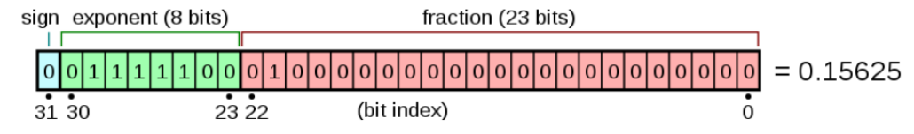
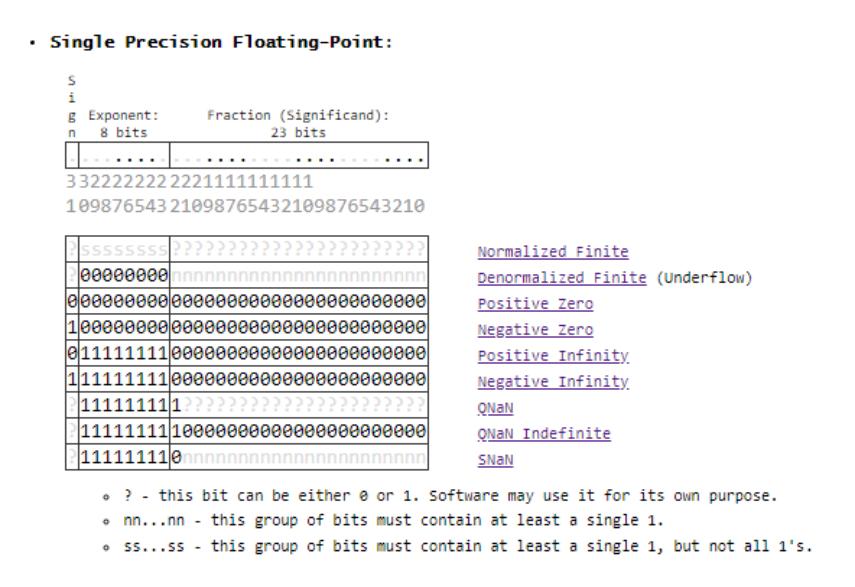
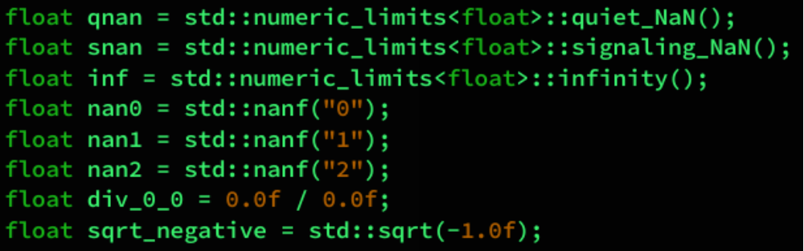
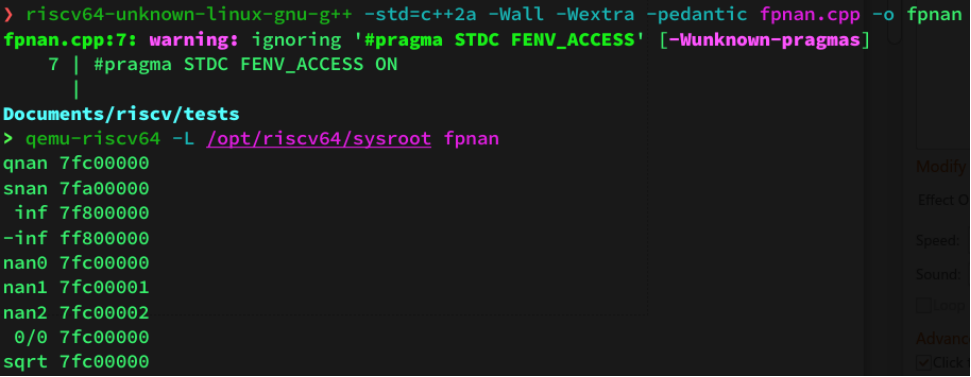
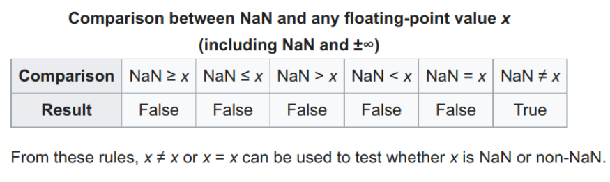
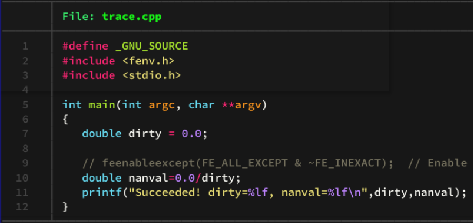

2203-浮点数问题
最近重读计算机体系结构，对于浮点数进行一些整理和复习。
IEEE 754
The IEEE Standard for Floating-Point Arithmetic (IEEE 754) is a technical standard for floating-point arithmetic established in 1985 by the Institute of Electrical and Electronics Engineers (IEEE). The standard addressed many problems found in the diverse floating-point implementations that made them difficult to use reliably and portably. Many hardware floating-point units use the IEEE 754 standard.
– From Wikipedia IEEE754
http://evanw.github.io/float-toy/
IEEE 754 是一类标准，主要包含：
- arithmetic formats: sets of binary and decimal floating-point data, which consist of finite numbers (including signed zeros and subnormal numbers), infinities, and special “not a number” values (NaNs)
- interchange formats: encodings (bit strings) that may be used to exchange floating-point data in an efficient and compact form
- rounding rules: properties to be satisfied when rounding numbers during arithmetic and conversions
- operations: arithmetic and other operations (such as trigonometric functions) on arithmetic formats
- exception handling: indications of exceptional conditions (such as division by zero, overflow, etc.)
一般的浮点数表示形式如：
采用 :
Sign(Blue) + Biased Exponet(Green) + Fraction(Red)
对于我们编程来说有如下需要注意的问题：
Rounding Rule
Round to nearest, ties to even
Round to nearest, ties away from zero
Round toward 0
Round toward +∞
Round toward −∞
(Since C++11)
std::round, std::roundf
std::roundl, std::lround
std::lroundf, std::lroundl
std::llround, std::llroundf
NAN
NAN 有两种：
- QNAN
- SNAN
其中 QNAN 是可以利用计算构造的，SNAN 则是内置标注的

下面用几个例子说明如何使用：
 常见的比较方式有：

Most operations with at least one NaN operand.
- Indeterminate forms:
- The divisions (±0) / (±0) and (±∞) / (±∞).
- The multiplications (±0) × (±∞) and (±∞) × (±0).
- Remainder x % y when x is an infinity or y is zero.
- The additions (+∞) + (−∞), (−∞) + (+∞) and equivalent subtractions (+∞) − (+∞) and (−∞) − (−∞).
- The standard has alternative functions for powers:
- The standard pow function and the integer exponent pown function define 00, 1∞, and ∞0 as 1.
- The powr function defines all three indeterminate forms as invalid operations and so returns NaN.
- Real operations with complex results, for example:
- The square root of a negative number.
- The logarithm of a negative number.
- The inverse sine or inverse cosine of a number that is less than −1 or greater than 1.
如果需要 trace NAN 的时候，可以这样：

Reference
- https://en.wikipedia.org/wiki/IEEE_754
- https://stackoverflow.com/questions/8341395/what-is-a-subnormal-floating-point-number
- https://en.cppreference.com/w/cpp/numeric/math/round
- https://en.cppreference.com/w/cpp/types/numeric_limits/has_quiet_NaN
- https://en.cppreference.com/w/cpp/types/numeric_limits/has_signaling_NaN
- https://stackoverflow.com/questions/18118408/what-is-the-difference-between-quiet-nan-and-signaling-nan
- https://ieeexplore.ieee.org/document/8766229
- https://docs.python.org/3/library/fractions.html
- https://www.boost.org/doc/libs/1_57_0/libs/rational/rational.html
- http://h5cpp.org/
- https://docs.h5py.org/en/stable/mpi.html
- http://www.netlib.org/scalapack/
- https://www.openblas.net/
- https://github.com/jerryz123/riscv-OpenBLAS